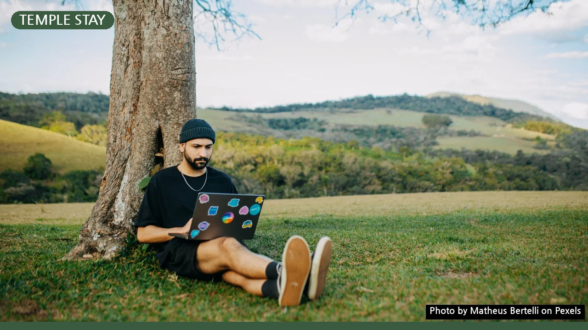

원격근무자를 위한 산사 워케이션, 실제 후기로 본 핵심 장단점
사진: Matheus Bertelli / Pexels (무료 이미지, 출처 표기)
산사 워케이션이란? 왜 원격근무자에게 주목받을까?
산사 워케이션은 일(Work)과 휴가(Vacation)를 결합한 '워케이션(Workation)' 개념에 사찰에서의 생활을 더한 형태입니다. 고즈넉한 산사에서 명상, 걷기, 발우공양 등 전통문화를 체험하며 업무에 몰입하는 새로운 근무 방식입니다.
디지털 전환 시대와 원격근무의 확산으로 많은 직장인들이 번아웃과 스트레스에 시달리고 있습니다. 이러한 환경 속에서 산사 워케이션은 평소와 다른 환경에서 재충전과 업무 효율을 동시에 잡으려는 원격근무자들에게 새로운 대안으로 주목받고 있습니다.
실제 참가자들이 꼽은 산사 워케이션의 장점
실제 산사 워케이션에 참여한 원격근무자들은 다음과 같은 장점들을 공통적으로 언급했습니다. 고요하고 자연 친화적인 환경이 주는 이점이 두드러집니다.
- 고요하고 집중하기 좋은 환경: 도시의 소음에서 벗어나 조용한 사찰 환경에서 업무에 깊이 몰입할 수 있었습니다. 집중력이 높아져 평소보다 효율적으로 업무를 처리했다는 후기가 많습니다.
- 디지털 디톡스와 심신 안정: 휴대폰과 컴퓨터 사용을 최소화하며 디지털 디톡스를 경험했습니다. 명상, 차담 등 사찰 프로그램 참여로 스트레스가 줄고 마음의 평화를 얻었다는 의견이 많았습니다.
- 자연 속 휴식과 건강 증진: 맑은 공기와 아름다운 자연 속에서 산책하며 신체 활동을 늘릴 수 있었습니다. 이는 업무 피로도를 낮추고 전반적인 건강 증진에 도움이 되었다는 평가입니다.
- 새로운 영감과 창의성 증진: 일상과 다른 환경에서 새로운 관점과 아이디어를 얻는 데 도움이 되었다는 후기도 있습니다. 고정된 사고에서 벗어나 창의적인 문제 해결 능력을 키울 기회가 됩니다.
- 저렴한 비용: 일반적인 여행이나 호텔 워케이션에 비해 상대적으로 저렴한 비용으로 숙박과 식사를 해결할 수 있어 경제적 부담을 줄일 수 있습니다. (템플스테이 프로그램 비용은 사찰마다 다릅니다.)
이런 점은 아쉬웠어요: 고려해야 할 단점과 한계
물론 산사 워케이션이 모두에게 완벽한 것은 아닙니다. 개인의 성향이나 업무 특성에 따라 아쉬움을 느끼는 부분도 있습니다. 신청 전 충분히 고려해야 할 단점과 한계를 정리했습니다.
- 인터넷 환경 및 편의시설: 일부 사찰은 인터넷 접속이 원활하지 않거나, 개인별 전용 공간이 부족할 수 있습니다. 쾌적한 업무 환경을 중시한다면 사전에 시설 정보를 확인하는 것이 중요합니다.
- 단체생활과 규칙: 사찰은 공동생활 공간이므로 정해진 규칙을 따르고 다른 참가자들과 함께 생활해야 합니다. 개인의 독립적인 생활이나 자유로운 일정을 선호하는 경우 불편하게 느껴질 수 있습니다.
- 식사 및 생활 방식의 제약: 대부분 채식 위주의 사찰 음식이 제공되며, 정해진 시간에 식사해야 합니다. 육류나 특정 식단을 선호하거나 식사 시간이 자유롭지 않은 것에 민감하다면 고려해야 합니다.
- 문화적 차이 이해 필요: 불교 문화와 사찰 예절에 대한 기본적인 이해가 부족하다면 다소 낯설게 느껴질 수 있습니다. 열린 마음으로 새로운 문화를 받아들일 준비가 필요합니다.
- 개인의 성향 차이: 고요함과 사색을 즐기는 사람에게는 이상적이지만, 역동적이거나 사교적인 활동을 선호하는 사람에게는 다소 지루하거나 답답하게 느껴질 수 있습니다.
산사 워케이션, 어디서 어떻게 신청할까?
산사 워케이션 프로그램은 주로 한국불교문화사업단에서 운영하는 템플스테이와 지자체 연계 워케이션 프로그램을 통해 이용할 수 있습니다. 2024년 기준 신청 절차는 다음과 같습니다.
정확한 프로그램 내용, 비용, 신청 기간 등은 각 사찰이나 지자체의 공식 홈페이지에서 다시 확인하시길 권장합니다. 인기 있는 프로그램은 조기 마감될 수 있으니 미리 예약하는 것이 좋습니다.
성공적인 산사 워케이션을 위한 준비물 체크리스트
산사 워케이션을 떠나기 전, 어떤 준비물들을 챙겨야 할지 고민되실 겁니다. 아래 체크리스트를 참고하여 필요한 물품들을 꼼꼼히 준비하세요.
- 업무 관련 용품: 노트북, 충전기, 보조배터리, 마우스, 개인용 이어폰/헤드셋 (화상회의 시 필요), 휴대용 랜선 (인터넷 불안정 대비)
- 개인 생활 용품: 세면도구 (칫솔, 치약, 비누 등), 수건, 편안한 복장 (트레이닝복, 등산복 등), 실내용 슬리퍼, 개인 컵/텀블러, 간단한 상비약
- 사찰 생활 용품: 개인 독서 도구, 필기도구, 명상 도구 (선택 사항), 작은 백팩 (사찰 내 이동 시 용이)
- 기타: 자외선 차단제, 모자, 개인 간식 (사찰에 따라 반입 제한 여부 확인 필요)
산사 워케이션, 이런 분들께 특히 추천합니다
산사 워케이션은 모든 원격근무자에게 적합한 것은 아니지만, 특히 다음과 같은 분들에게는 더욱 특별하고 유익한 경험이 될 수 있습니다.
- 번아웃(Burnout)이 온 원격근무자: 반복되는 업무와 일상에 지쳐 새로운 활력이 필요한 분들에게 심신을 치유하고 재충전할 기회를 제공합니다.
- 새로운 아이디어가 필요한 기획자/크리에이터: 익숙한 환경에서 벗어나 자연 속에서 명상하며 새로운 영감과 창의적인 아이디어를 얻고 싶은 분들에게 적합합니다.
- 디지털 디톡스를 원하는 분: 스마트폰과 컴퓨터 사용을 줄이고 디지털 중독에서 벗어나 진정한 휴식을 경험하고 싶은 분들께 추천합니다.
- 고요한 환경에서 몰입하고 싶은 분: 방해받지 않는 조용한 공간에서 복잡한 업무에 집중하고, 생산성을 극대화하고 싶은 분들에게 최적의 환경을 제공합니다.
- 가성비 좋은 휴가를 찾는 분: 비용 부담 없이 일과 휴식을 병행하며 색다른 경험을 하고 싶은 분들에게 합리적인 대안이 될 수 있습니다.
🔗 이 글도 함께 보면 좋아요: 코스피 하락, 불안한 투자자라면 꼭 알아야 할 3가지 핵심 원인
관련 추천 상품
이 포스팅은 쿠팡 파트너스 활동의 일환으로, 이에 따른 일정액의 수수료를 제공받습니다.